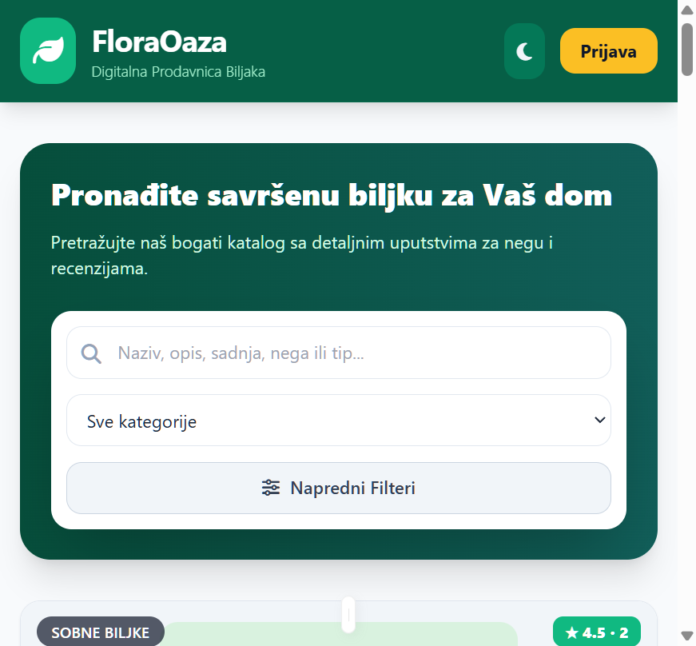
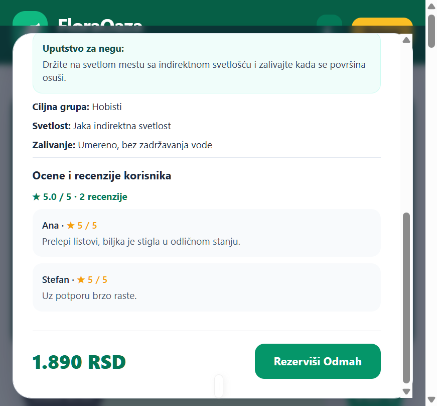
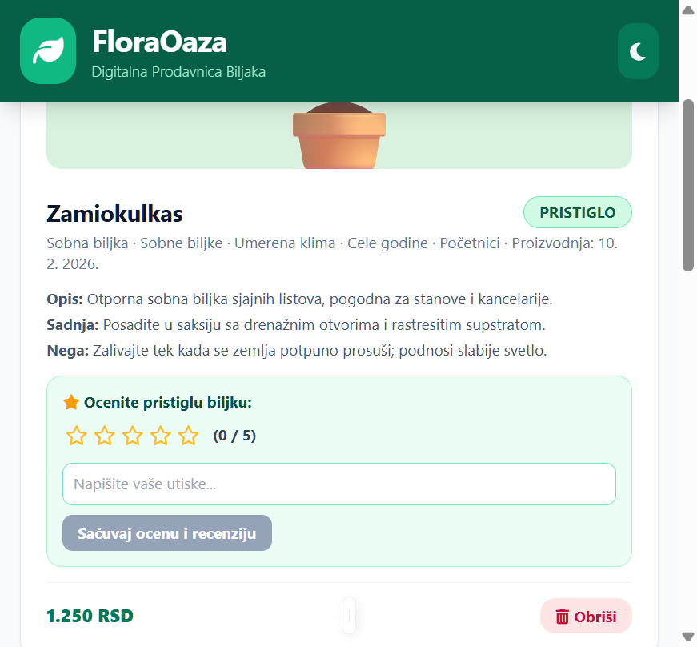
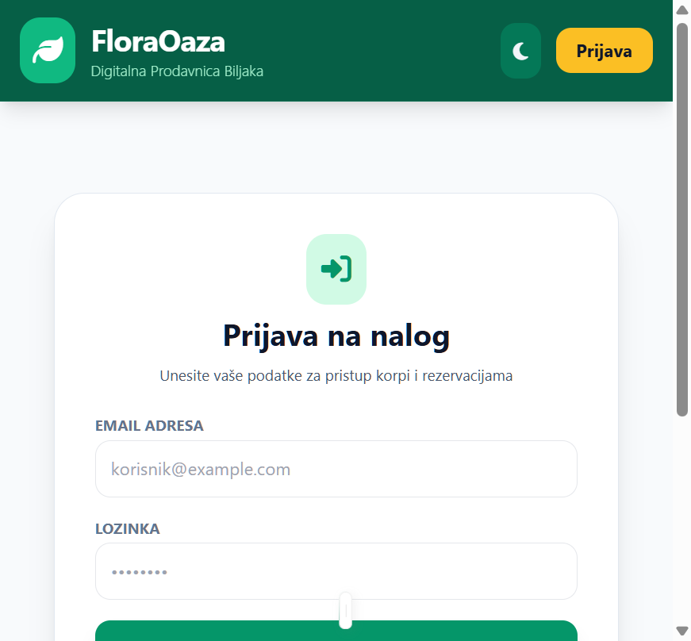
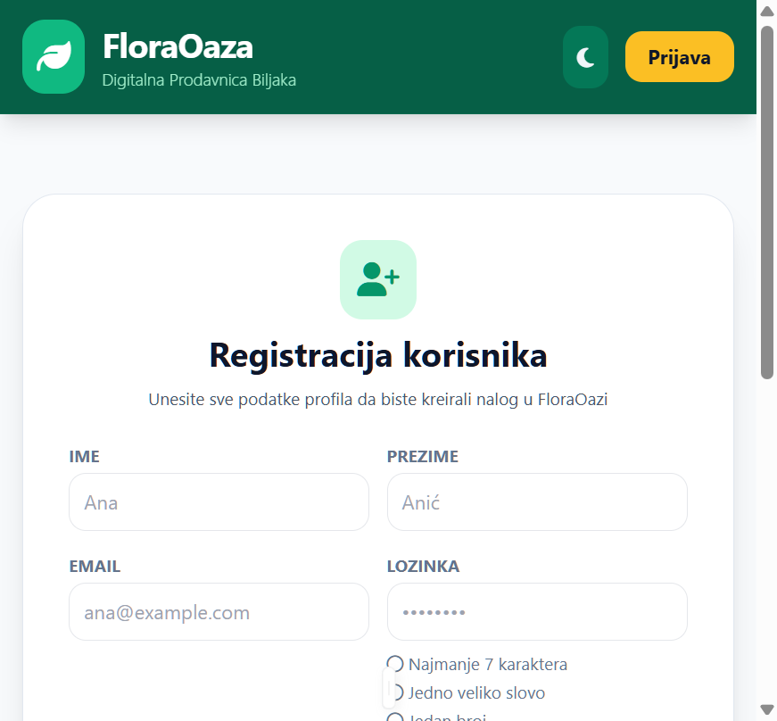
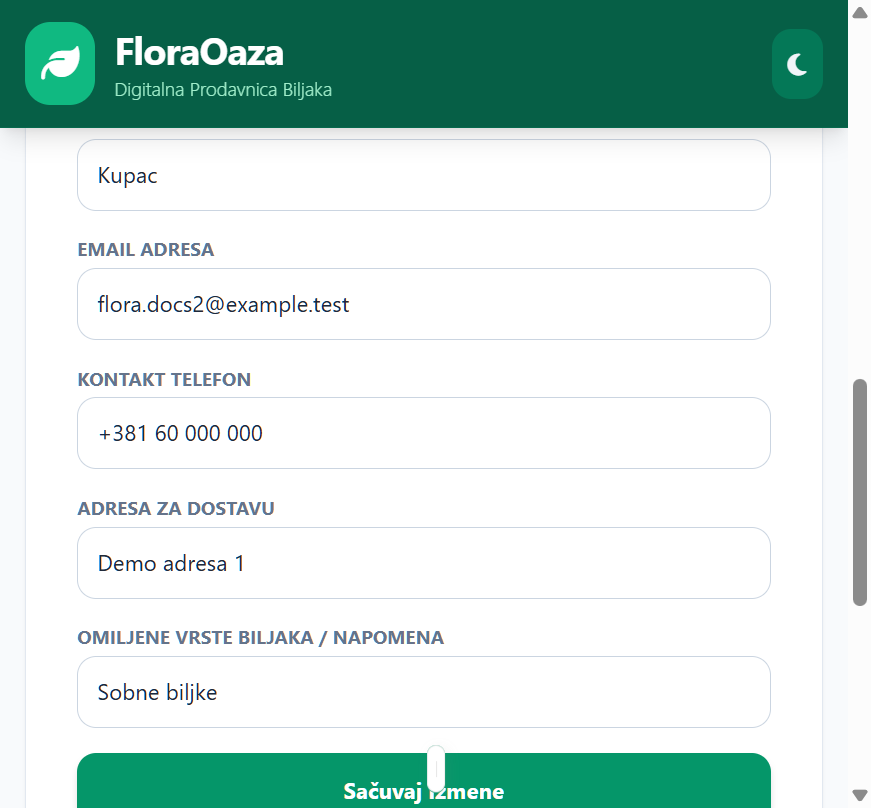

Funkcija: Kupac pregledava lokalno ponuđene biljke, pretražuje njihov naziv i opis i sužava rezultate prema karakteristikama, ceni, datumu proizvodnje i ocenama.

Funkcija: Kupac čita informacije o biljci, uputstva za sadnju i negu i recenzije prethodnih kupaca pre nego što odluči da li želi da je rezerviše.

Funkcija: Kupac pregleda svoje rezervacije, menja količinu i napomenu dok je biljka rezervisana, ocenjuje pristiglu biljku i prati ukupan iznos aktivnih rezervacija.

Funkcija: Kupac se prijavljuje na postojeći nalog kako bi pristupio svojoj korpi rezervacija i ličnom profilu.

Funkcija: Novi kupac kreira nalog unosom ličnih i kontakt podataka; forma prikazuje uslove za lozinku i sprečava slanje dok nisu ispunjeni.

Funkcija: Kupac pregleda i ažurira lične podatke i omiljene vrste biljaka, kao i istoriju svojih rezervacija.